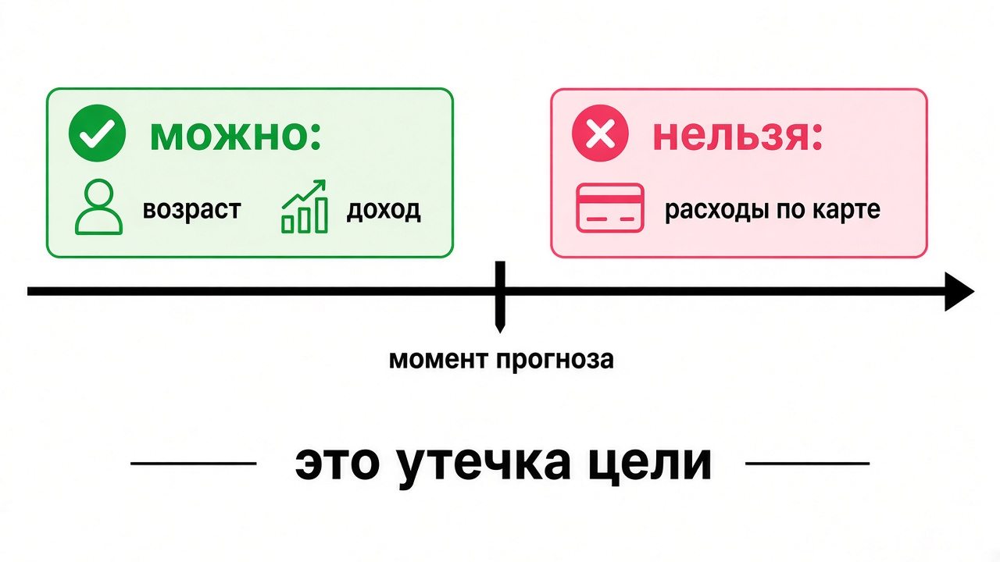

7. Утечка данных (Data Leakage)
Утечка — это когда в обучение попадает подсказка, которой в момент настоящего прогноза ещё нет. На проверке модель выглядит почти идеальной, а на новых заявках разваливается. Ошибку не видно по коду: цифры как раз слишком хорошие.

Граница на рисунке — момент, когда нужно выдать ответ. Слева то, что уже известно (возраст, доход, число плохих отчётов). Справа то, что появится только вместе с ответом или после него. Такой столбец в признаки не берут.
Два вида утечки:
- Утечка цели. Признак рассказывает сам ответ. Пример: предсказать, заболеет ли человек, и дать модели столбец «уже принимает антибиотики». Антибиотик назначают после диагноза, до прогноза его нет.
- Загрязнение обучения и проверки. Среднее, масштаб или список категорий посчитали по всей таблице, и только потом отложили проверку. Проверка косвенно поучаствовала в обучении. От этого защищает конвейер со страницы 4:
fitсчитает правила только по обучению,transformприменяет их к проверке.
Заявки на карту
Файл module-7-0/data/AER_credit_card_data.csv. Цель card: заявку одобрили или нет. Столбцы expenditure (расходы по карте) и share (доля этих расходов в доходе) подозрительны: у человека без карты расходов по ней быть не может. active и majorcards тоже описывают уже выданные карты, а не заявку.
Ячейка. Модель со всеми столбцами.
import pandas as pd
from sklearn.pipeline import make_pipeline
from sklearn.ensemble import RandomForestClassifier
from sklearn.model_selection import cross_val_score
# yes/no в файле сразу становятся True/False, а не текстом.
data = pd.read_csv(
"module-7-0/data/AER_credit_card_data.csv",
true_values=["yes"],
false_values=["no"],
)
print("Строк:", data.shape[0])
print(data.head())
y = data.card
# card — это ответ. Если оставить его среди признаков, модель увидит решение банка напрямую.
X = data.drop(columns=["card"])
# make_pipeline здесь из одного шага: готовить таблицу не нужно, все столбцы уже числа и логические значения.
model = make_pipeline(RandomForestClassifier(n_estimators=100, random_state=0))
scores = cross_val_score(model, X, y, cv=5, scoring="accuracy")
print(f"Точность со всеми столбцами: {scores.mean():.6f}")
Критерий 7а. Строк 1319. Точность около 0.980292. Для одобрения карты 98% на пяти складках — редкость. Такое число само по себе повод искать утечку, а не радоваться.
Ячейка. Кто вообще тратил.
# y True — карту выдали. ~y — не выдали.
spent_if_refused = X.expenditure[~y]
spent_if_approved = X.expenditure[y]
# Доля нулевых расходов. 1.00 значит: ни у одного отказа нет трат.
print(f"Отказ и ноль расходов: {(spent_if_refused == 0).mean():.2f}")
print(f"Одобрение и ноль расходов: {(spent_if_approved == 0).mean():.2f}")
Критерий 7б. У отказов ноль расходов в 1.00 случаев. У одобренных ноль расходов только в 0.02. Модель может почти не смотреть на доход и возраст: «расходы равны нулю → отказ».
Ячейка. Те же заявки без подсказок.
# Эти четыре столбца описывают жизнь уже выданной карты, а не момент заявки.
leaks = ["expenditure", "share", "active", "majorcards"]
X_safe = X.drop(columns=leaks)
scores_safe = cross_val_score(model, X_safe, y, cv=5, scoring="accuracy")
print(f"Точность без утечки: {scores_safe.mean():.6f}")
print("Остались столбцы:", list(X_safe.columns))
Критерий 7в. Точность около 0.829410. Она ниже 0.98, и это честная оценка: на новой заявке расходов по ещё не выданной карте нет, модель с утечкой там примениться не сможет. Оставшиеся столбцы: reports, age, income, owner, selfemp, dependents, months.
Правило на любую таблицу: перед fit спросить про каждый столбец, известен ли он в момент прогноза. Если нет — столбец убирают, даже если точность на истории от этого падает.